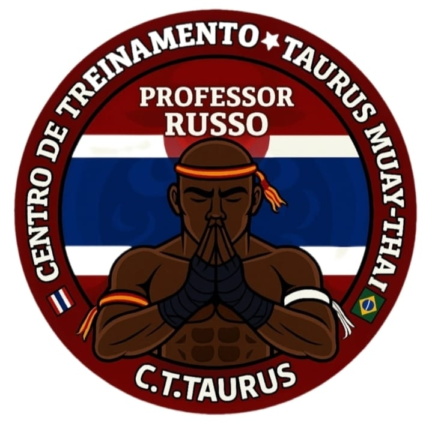
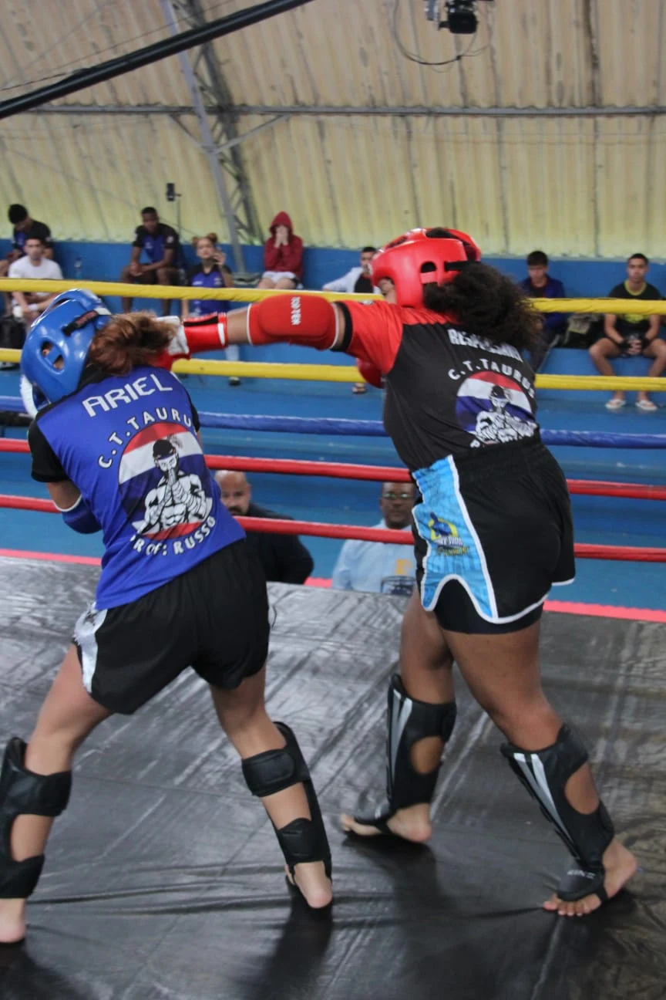
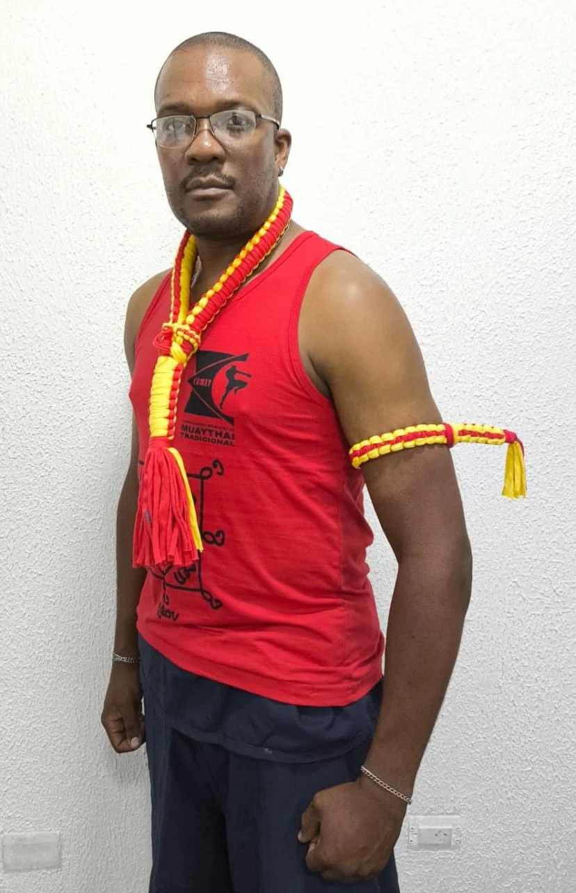
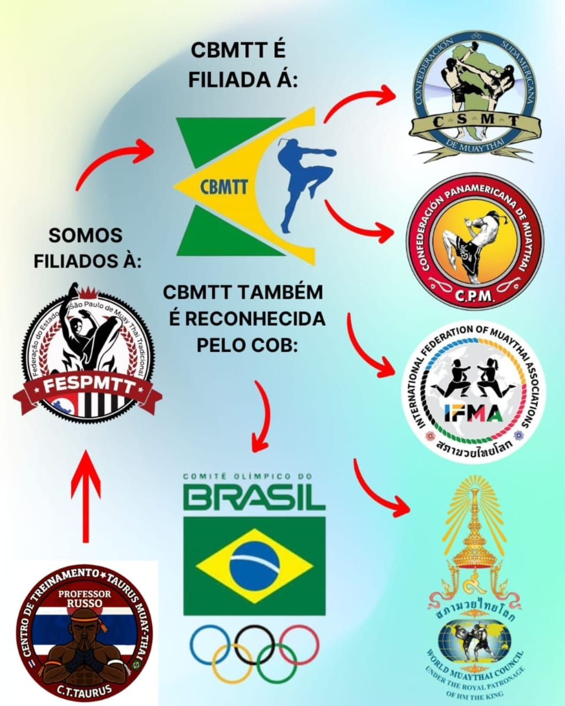

TÉCNICA
Socos, chutes, joelhos e cotovelos. Conheça os fundamentos que dão identidade ao Muay Thai e construa sua evolução.

C.T. TAURUSMUAY THAI • PROFESSOR RUSSO
CENTRO DE TREINAMENTO TAURUS
Mais que golpes. Disciplina, respeito e coragem para evoluir dentro e fora do tatame.
QUERO CONHECER O C.T. ↗Veja nossa equipe em ação ↓
C.T. TAURUS MUAY THAI01 / O NOSSO CENTRO
No Centro de Treinamento Taurus Muay Thai, cada treino é uma oportunidade de aprender, superar desafios e fortalecer o espírito de equipe.
Sob a identidade do professor Russo, carregamos o respeito pela arte marcial e por quem caminha ao nosso lado. Do primeiro contato com a modalidade à evolução técnica, o caminho começa com dedicação.
02 / A ESSÊNCIA TAURUS
A arte das oito armas.
Valores para a vida inteira.
Socos, chutes, joelhos e cotovelos. Conheça os fundamentos que dão identidade ao Muay Thai e construa sua evolução.
Estar presente. Aprender com cada repetição. Transformar esforço e constância em um novo jeito de encarar os desafios.
Pela tradição, pelo professor e por cada parceiro de treino. A força de uma equipe começa na maneira como ela se cuida.
03 / NOSSA HISTÓRIA EM MOVIMENTO
Registros do C.T. Taurus.
Clique nas fotos para ampliar.
04 / FEDERAÇÃO
Conheça as entidades e os vínculos apresentados no material institucional do C.T. Taurus.
VER IMAGEM COMPLETA ↗
05 / PRIMEIRO PASSO
Você pode dar o primeiro passo sem conhecer a modalidade. Consulte a equipe sobre a turma e a orientação adequadas ao seu nível.
Roupas confortáveis e água são um bom começo. Confirme com a equipe quais equipamentos são necessários e como se preparar para a primeira aula.
Os horários, a disponibilidade de turmas e os valores devem ser confirmados diretamente com o C.T. Taurus.
Praticar Muay Thai não significa assumir um compromisso com competições. Converse com o professor sobre seus objetivos e a proposta de treino.
SEU PRÓXIMO PASSO É AQUI
Prepare sua mensagem e consulte a equipe sobre turmas, horários e como começar.